A la hora de ponernos con el montaje de todo lo adquirido, recomiendo leer siempre los manuales si se es inexperto o si quieres asegurarte de como se pone algo. El orden de montaje debería ser algo así:
Esta es la guía de conexiones de el panel frontal de la placa base donde diversos cables de la carcasa iran conectados:
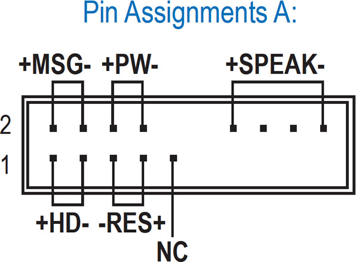 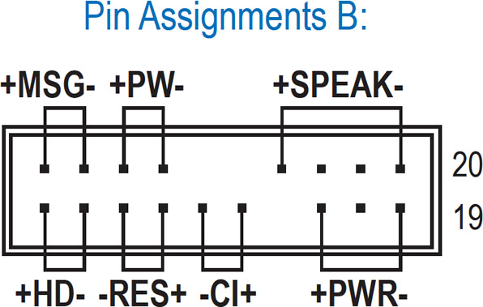Estos son los dos lugares posibles en los que puede ir la fuente de alimentación:
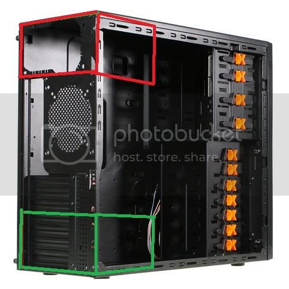Dependiendo del tamaño, la placa base estara ordenada de forma distinta:
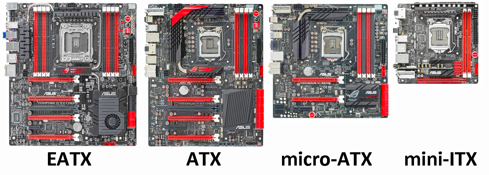La ram va colocada en estos slots, solo hay que apretar de cada lado mientras la introduces y asegurar que ha encajado bien si los pestillos laterales estan bajados:
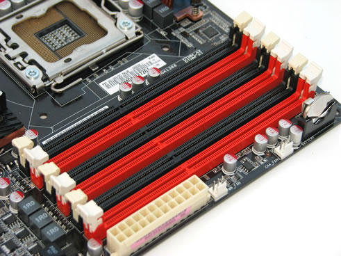 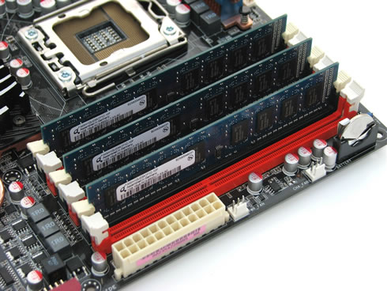Este es el zocalo del procesador, dependendiendo de si la placa base es AMD o Intel tendra formas distintas e instalación distinta. La flecha que hay en una esquina indica como tienes que orientarlo y hay que bajar la palanca lateral una vez colocado:
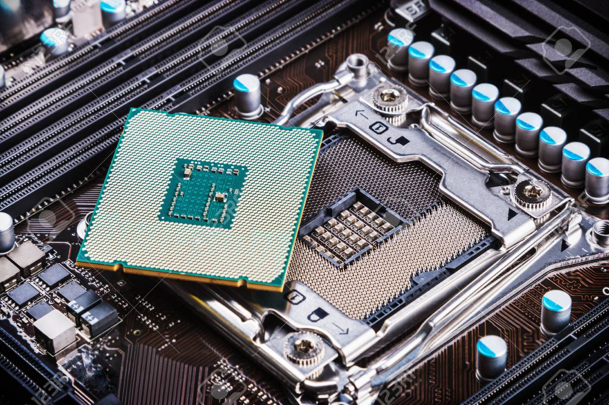 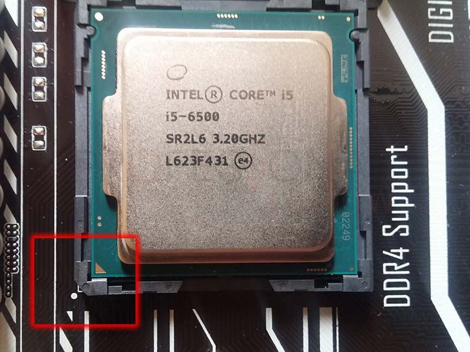 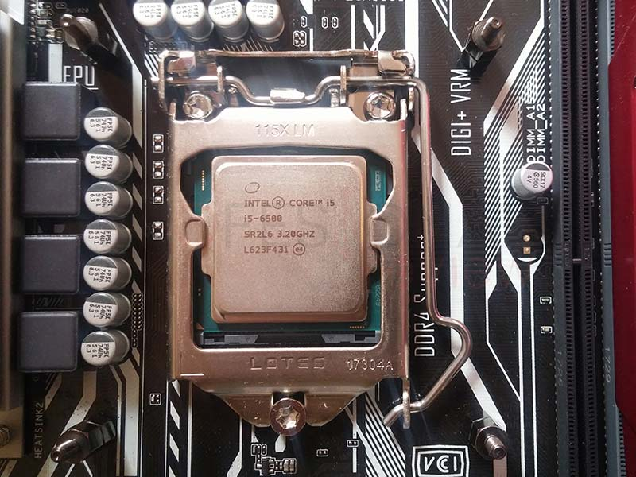Los HDD o SSD que poseas podras colocarlos donde la carcasa tenga espacio para ellos, estos lugares suelen variar, tan solo asegurate de que el cable SATA de la fuente de alimentación y placa base lleguen a estos:
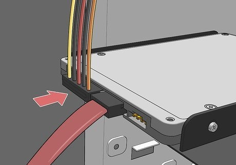El ventilador del CPU es obligatorio e irá pegado a este vía pasta termica para que el frio llegue correctamente. Con los procesadores AMD ya te viene un ventilador y una pasta termica pre-aplicada a este gratis, pero con Intel tendras que comprarlo a parte. Esta parte es complicada si nunca has visto como se hace:
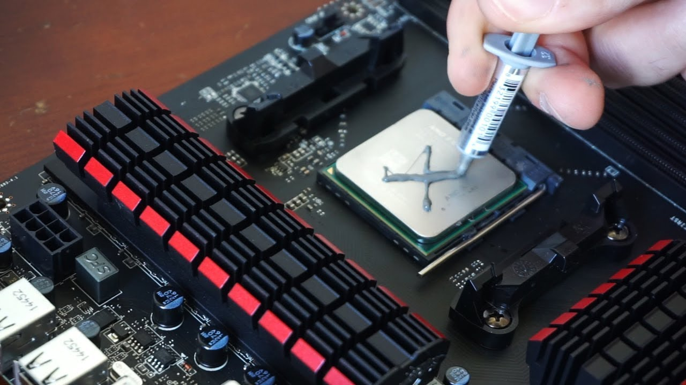 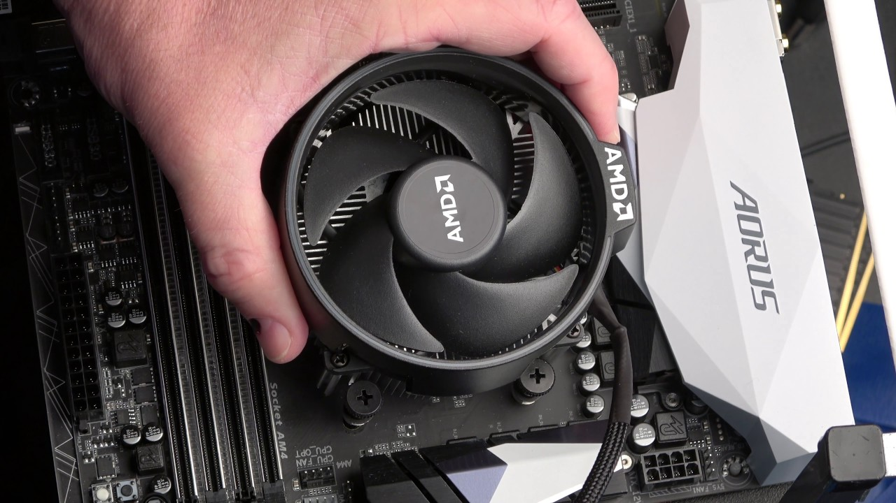La GPU es los mas fácil de colocar, solo empujala en el puerto PCI-Express x16 y ya (quizas quede un poco doblada pero es normal):
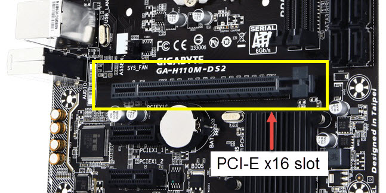 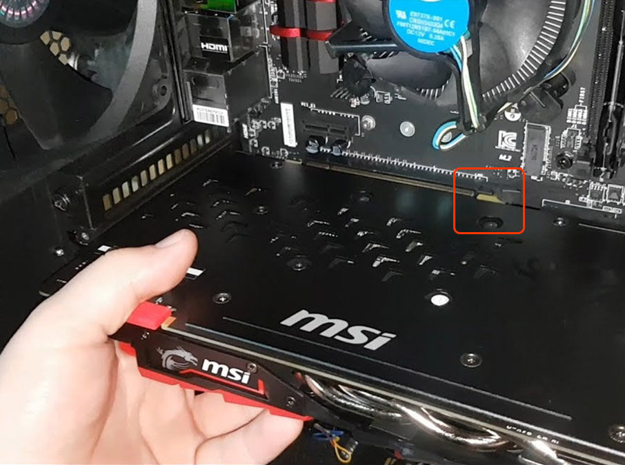